Le site internet dédié aux oeuvres de l'univers Star Wars !
La trilogie originale :

- De Georges Lucas
- 1977
- Budget : 11 000 000 $ US estimé
- Box-office mondial : 775 398 507 $ US
- 8,6/10 sur IMDb
- Anecdote : "George Lucas était tellement sûr que ce film échouerait qu'au lieu d'assister à la première, il est parti en vacances à Hawaï avec son bon ami Steven Spielberg. C'est pendant ces vacances qu'ils ont eu l'idée de Les Aventuriers de l'arche perdue (1981)."
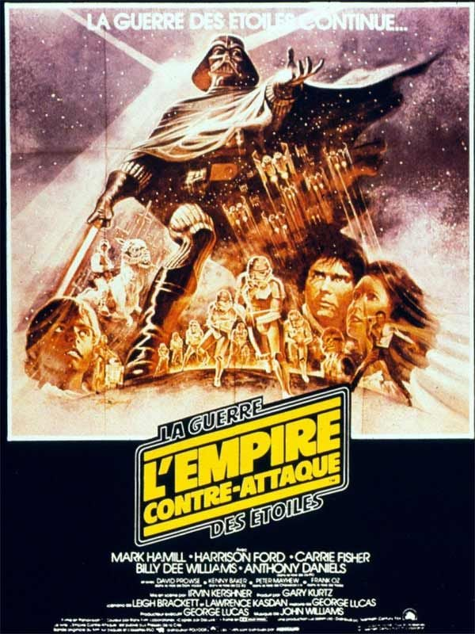
- De Irvin Kershner
- 1980
- Budget : 18 000 000 $ US estimé
- Box-office mondial : 550 016 086 $ US
- 8,7/10 sur IMDb
- Anecdote : Lors du tournage à Finse, en Norvège, une violente tempête de neige s'est abattue sur l'hôtel où séjournaient les acteurs et l'équipe. Cela aurait normalement interrompu le tournage, mais le réalisateur Irvin Kershner a pensé que ces conditions météorologiques étaient une excellente occasion de filmer la scène où Luke erre dans la neige après s'être échappé de la grotte de Wampa. Il a donc envoyé Mark Hamill dehors dans le froid, pendant que lui et le caméraman sont restés et ont filmé dans le hall d'entrée de l'hôtel.
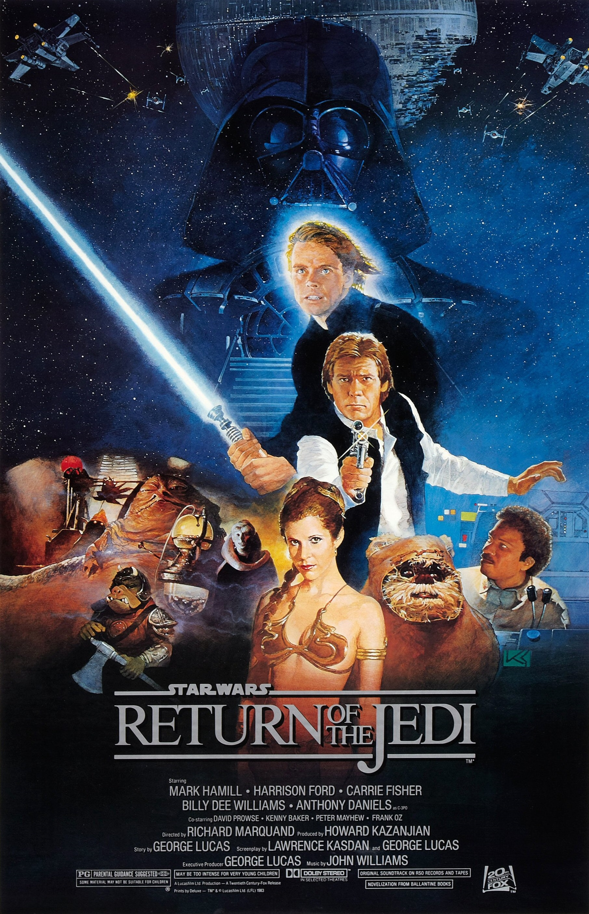
- De Richard Marquand
- 1983
- Budget : 32 500 000 $ US estimé
- Box-office mondial : 482 466 382 $ US
- 8,3/10 sur IMDb
- Anecdote : Le trône de l'Empereur était mécanisé de manière à pouvoir tourner lorsque la scène l'exigeait. Cependant, le mécanisme n'a jamais fonctionné correctement, donc Ian McDiarmid a dû le faire bouger en remuant ses pieds/
la prélogie :
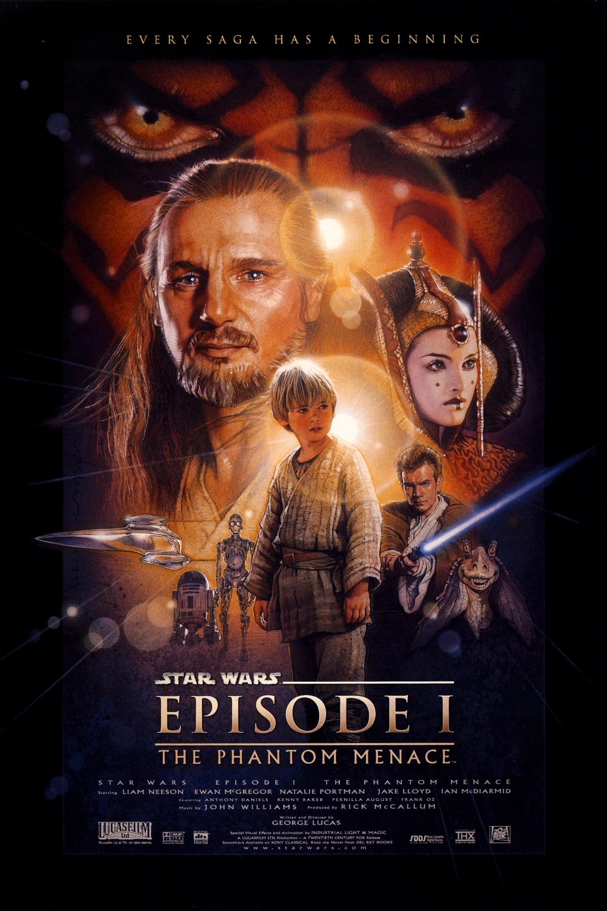
- De Georges Lucas
- 1999
- Budget :115 000 000 $ US estimé
- Box-office mondial : 1 046 515 409 $ US
- 6,5/10 sur IMDb
- Anecdote : Liam Neeson était tellement impatient de jouer dans le film qu'il a signé sans avoir lu le scénario.
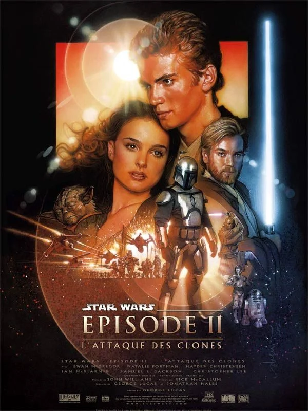
- De Georges Lucas
- 2002
- Budget : 115 000 000 $ US estimé
- Box-office mondial : 653 780 724 $ US
- 6,6/10 sur IMDb
- Anecdote : Lorsque Jango Fett monte dans son vaisseau après son combat avec Obi-Wan, il se cogne la tête contre la porte partiellement ouverte. C'était intentionnel et il s'agit d'une référence à une célèbre gaffe de La Guerre des étoiles (1977), où un stormtrooper se cogne accidentellement la tête contre une porte.
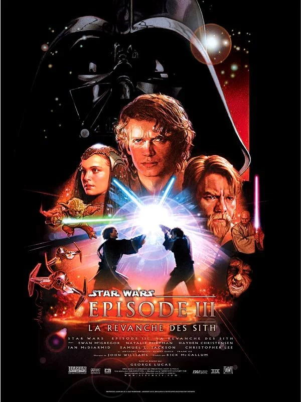
- De Georges Lucas
- 2005
- Budget : 113 000 000 $ US estimé
- Box-office mondial : 905 595 947 $ US
- 7,7/10 sur IMDb
- Anecdote : Ewan McGregor et Hayden Christensen se sont entraînés pendant deux mois à l'escrime et ont fait une préparation physique en vue de leur bataille épique. Grâce à leur entraînement, la vitesse à laquelle Kenobi et Skywalker engagent le duel (dans le film terminé) est réelle et n'a pas été accélérée numériquement.
la postlogie :
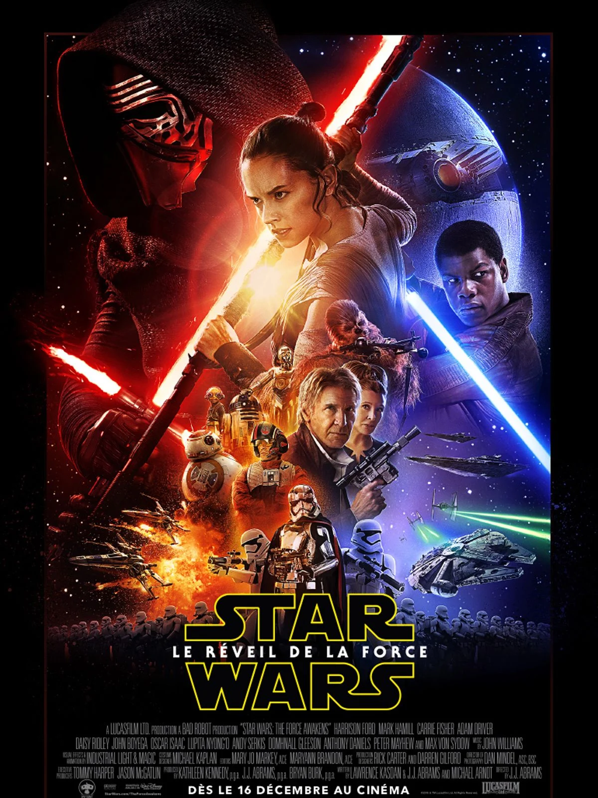
- De J.J. Abrams
- 2015
- Budget : 245 000 000 $ US estimé
- Box-office mondial : 2 071 310 218 $ US
- 7,7/10 sur IMDb
- Anecdote : Simon Pegg incarne la créature extraterrestre Unkar Plutt, à qui Rey vend ses pièces récupérées.
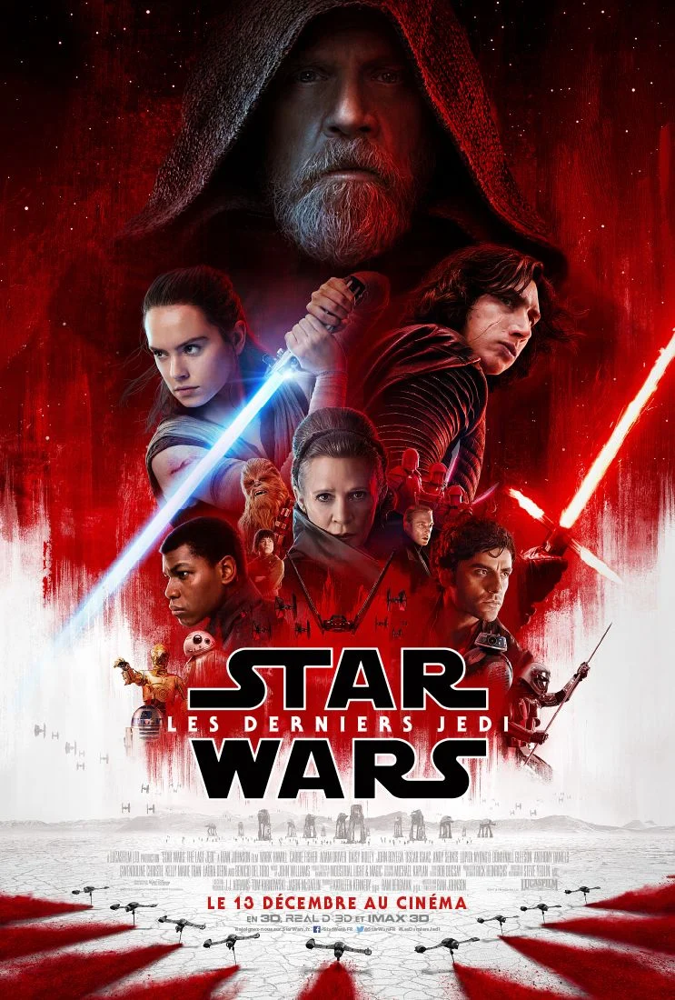
- De Rian Johnson
- 2018
- Budget : 317 000 000 $ US estimé
- Box-office mondial : 1 334 407 706 $ US
- 6,8/10 sur IMDb
- Anecdote : Mark Hamill et Rian Johnson ont révélé lors d'une projection aux BAFTA que Hamill avait demandé à incarner un personnage en images de synthèse en plus de son rôle de Luke Skywalker. Dans le film, il incarne Dobbu Scay, le personnage qui met de l'argent dans BB-8 dans les scènes du casino.
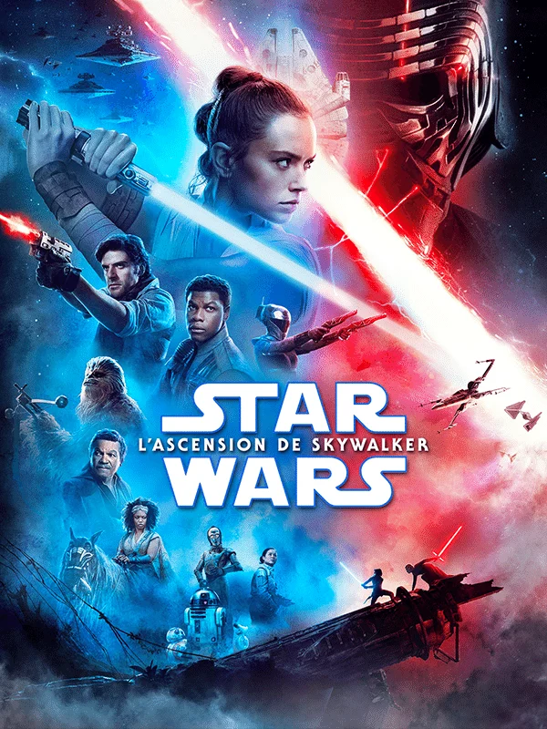
- De J.J. Abrams
- 2019
- Budget : 275 000 000 $ US estimé
- Box-office mondial : 1 077 022 372 $ US
- 6,3/10 sur IMDb
- Anecdote : Des images inutilisées de Carrie Fisher tournées pour Star Wars : Épisode VII - Le Réveil de la Force (2015) a été intégré en supprimant numériquement l'arrière-plan et en le superposant ailleurs. Des effets visuels ont été utilisés pour changer sa garde-robe et ajouter du gris à ses cheveux afin que les images correspondent à son apparence dans Star Wars : Épisode VIII - Les Derniers Jedi (2018).
Les spin-offs :
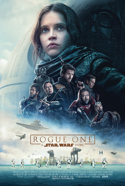
- De Gareth Edward
- 2016
- Budget : 200 000 000 $ US estimé
- Box-office mondial : 1 058 684 742 $ US
- 7,8/10 sur IMDb
- Anecdote : R2-D2 et C-3PO font une brève apparition, faisant Anthony Daniels le seul acteur à apparaître dans tous les films. (Il apparaît comme un autre personnage dans Solo: A Star Wars Story (2018)).
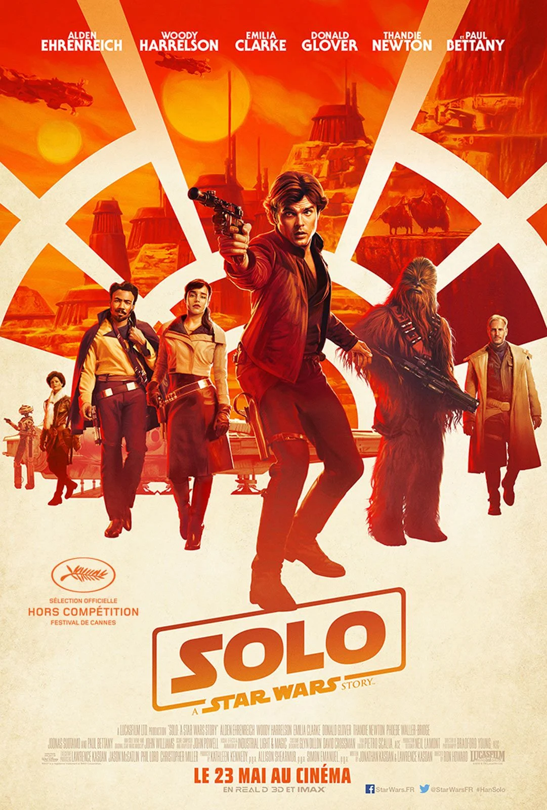
- De Ron Howard
- 2018
- Budget : 275 000 000 $ US estimé
- Box-office mondial : 392 924 807 $ US
- 6,9/10 sur IMDb
- Anecdote : Harrison Ford a révélé qu'il avait vu le film et qu'il le trouvait « phénoménal », mais il n'a pas participé à la première avec le reste de la distribution parce qu'il ne voulait pas voler à Alden Ehrenreichson son moment de gloire.
Les séries :
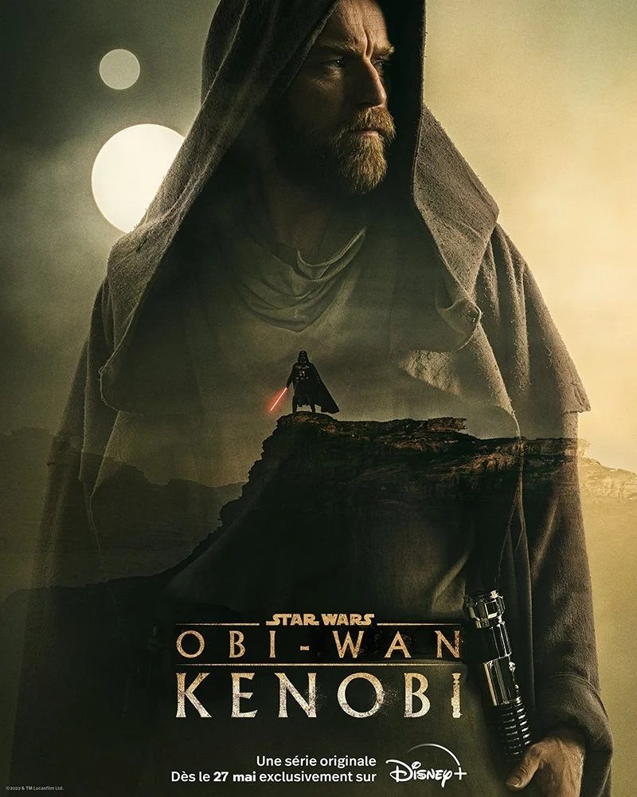
- De Joby Harold
- 2022
- Budget : 90 000 000 $ US
- 7,0/10 sur IMDb
- Anecdote : Bien qu'il ait cessé de composer quoi que ce soit lié à Star Wars après la fin de la trilogie Sequel, John Williams a contacté Kathleen Kennedy et a demandé à écrire quelque chose pour cette émission, simplement parce qu'Obi-Wan Kenobi n'avait jamais eu de thème de personnage propre auparavant, et Williams voulait en écrire un pour lui.

- De Dave Filoni
- 2023
- Budget : 100 000 000 $ US
- 7,4/10 sur IMDb
- Anecdote : L'appareil portable auquel Sabine Wren branche la tête du droïde à l'hôpital est une ancienne console de jeu vidéo rétro datant de 1978 appelée Galaxy Invader CGL. Pour le tournage, elle le tient à l'envers.